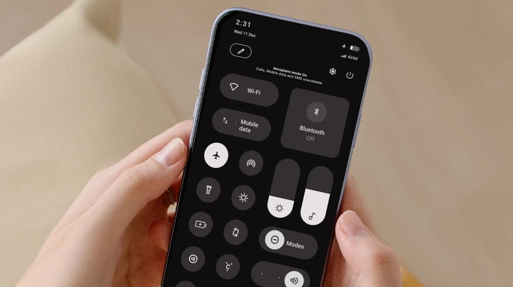

Visual Thinker
“I use visuals to turn ideas into experiences that feel clear, engaging, and easy to understand”
Hi, I’m
I solve problems that are easy to overlook but important to people.
Making every interaction feel intentional.
Selected Works
Ideas sparked by everyday observations,
explored through curiosity and design.

Reducing accidental disconnection through clearer Aeroplane Mode communication.
A simple system intervention designed to prevent missed calls and unnecessary worry.
Rethinking how we interact with AI by putting thinking before answers.
An AI thinking partner designed to help users reflect, reason, and stay engaged.
My Philosophy
“I use visuals to turn ideas into experiences that feel clear, engaging, and easy to understand”
“With a computer science background, I bring technical thinking and curiosity into every design problem I explore”